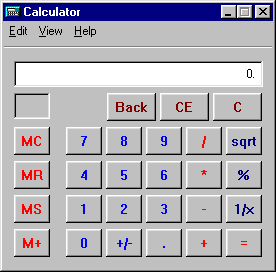
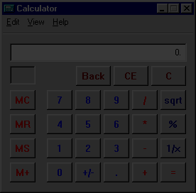
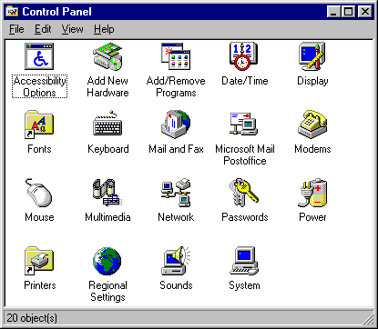
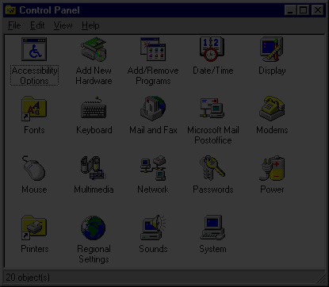
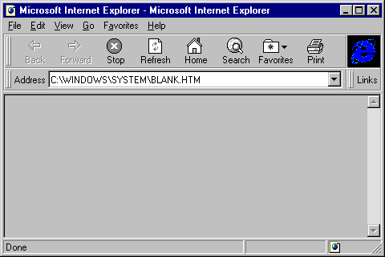
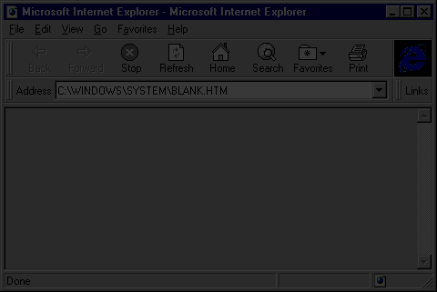

Calculator — 100% identical pixels
0 differing pixels / 75,072. 276 × 272. Chrome: 0 differences. Content: 0 differences.


Source screenshots: GUIdebook Windows 95 (Calculator and Control Panel) and Windows 95 OSR2 (Internet Explorer 3). These results cover the retained canvas reference renderer in @napi-rs/canvas. The entire desktop now uses DOM and CSS and is checked separately in the browser. These percentages do not measure the migrated interface. Exact RGBA comparison at each source's original dimensions. No tolerance, alignment adjustment, masking, or excluded pixels. Magenta marks every mismatch. Icons are extracted original artwork; chrome, text and layout are independently painted. These offline painters remain only as historical references.
These are the initial active windows at their native sizes. Interactive states and settings dialogs are not covered by these source screenshots. Large flat areas and reused artwork contribute to the score; the percentages alone do not establish perceptual fidelity.
0 differing pixels / 75,072. 276 × 272. Chrome: 0 differences. Content: 0 differences.


0 differing pixels / 150,230. 415 × 362. Chrome: 0 differences. Content: 0 differences.


0 differing pixels / 154,080. 480 × 321. Chrome: 0 differences. Content: 0 differences.

